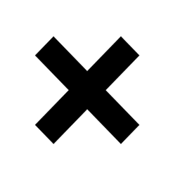
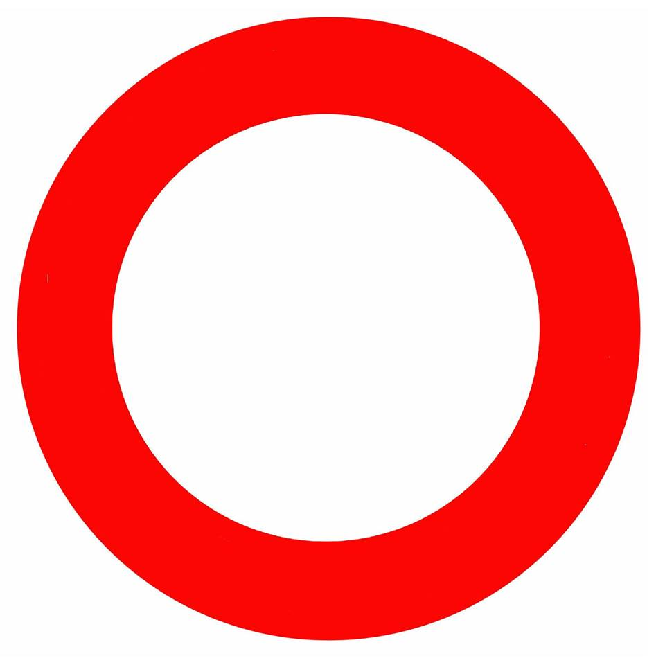

<DOCTYPE html>

<html>

<head>

    <title>tic tac toe &mdash; Textures</title>

    <meta http-equiv="content-type" charset="utf-8" content="text/html; utf-8">

   

    <link rel="stylesheet" href="css/bootstrap-grid.css" type="text/css">
    <link rel="stylesheet" href="css/bootstrap.css" type="text/css">
    <script id="shader-vs" type="x-shader/x-vertex">

            attribute vec3 aVertexPosition;

            attribute vec2 aTextureCoord;

            uniform mat4 uMVMatrix;

            uniform mat4 uPMatrix;

            varying vec2 vTextureCoord;

            void main(void) {

                gl_Position = uPMatrix * uMVMatrix * vec4(aVertexPosition, 1.0);

                // For the fragment shader

                vTextureCoord = aTextureCoord;
            }
    </script>

    <script id="shader-vs2" type="x-shader/x-vertex">
        
        attribute vec3 aVertexPosition;

        attribute vec3 aVertexColor;
        
        uniform mat4 uMVMatrix;

        uniform mat4 uPMatrix;

        varying vec4 vertexColor;
        
        void main(void) {
            
            // To allow seeing the points drawn
            
            gl_PointSize = 5.0;
            
            // Just converting the (x,y,z) vertices to Homogeneous Coord.
            
            // And multiplying by the Projection and the Model-View matrix
            
            gl_Position = uPMatrix * uMVMatrix * vec4(aVertexPosition, 1.0);
            
            // Converting the RGB color value to RGBA
            
            vertexColor = vec4(aVertexColor, 1.0);
        }
    </script>


    <script id="shader-fs" type="x-shader/x-fragment">

            precision mediump float;

            varying vec2 vTextureCoord;

            uniform sampler2D uSampler;

            void main(void) {

                gl_FragColor = texture2D(uSampler, vec2(vTextureCoord.s, vTextureCoord.t));
            }

    </script>


    <script id="shader-fs2" type="x-shader/x-fragment">

        precision mediump float;
        
        varying vec4 vertexColor;
        
        void main(void) {
            
            // Using the passed vertex color
            
            gl_FragColor = vertexColor;
        }

    </script>

    <!-- The JS files -->

    <!-- Some useful functions for browser compatibility -->

    <script type="text/javascript" src="webgl-utils.js"></script>

    <!-- Handling vectors and matrices -->

    <script type="text/javascript" src="maths.js"></script>

    <!-- WebGL code -->

    <script type="text/javascript" src="initShaders.js"></script>

    <script type="text/javascript" src="TicTacToeColor.js"></script>

    <script type="text/javascript" src="TicTacToe.js"></script>
    


</head>

<body onload="runWebGL();" >
<div class="container" style="width: 100%">
    <div class="row">
        <div class="col-md-3">
            <h2 style="text-align: center; margin-top: 30%; font-weight:bold;"> Jogador 1 </h2>
            <div style="display: flex; margin-top: 30px">
                
            </div>
            <h2 style="text-align: center; margin-top: 30px; font-weight:bold" id = "vit1" >Vitórias: 0</h2>
        </div>
        <div class="col-md-6">
            <div style="text-align: center">

                <p><h1 style="color : b2b2b2; font-size:550%; font-weight:bold"> Tic Tac Toe 3D </h1></p>

                <canvas id="my-canvas" style="border:1px solid #000000; style="background-color:red";" width="800" height="800"></canvas>

                <p id="info"></p>

                <p>

                    <button id="reset" style="border-radius:12px; background-color:b2b2b2; border:1px solid black; font-size:24px; color: black; font-weight:bold; margin:2px">Reset</button>

                    <button id="new_game" style="border-radius:12px; background-color:b2b2b2; border:1px solid black; font-size:24px; color: black; font-weight:bold; margin:2px; visibility: hidden;">New Game</button>

                </p>

                <canvas id="my-canvas2" style="border:1px solid #000000;" width="800" height="800"></canvas>

            </div>
        </div>
        <div class="col-md-3">
            
            <h2 style="text-align: center; margin-top: 30%; font-weight:bold;"> Jogador 2 </h2>
            <div style="display: flex; margin-top: 30px">
                
            </div>
            <h2 style="text-align: center; margin-top: 30px; font-weight:bold" id = "vit2">Vitórias: 0</h2>
        </div>
        </div>
    </div>
</body>

</html>
